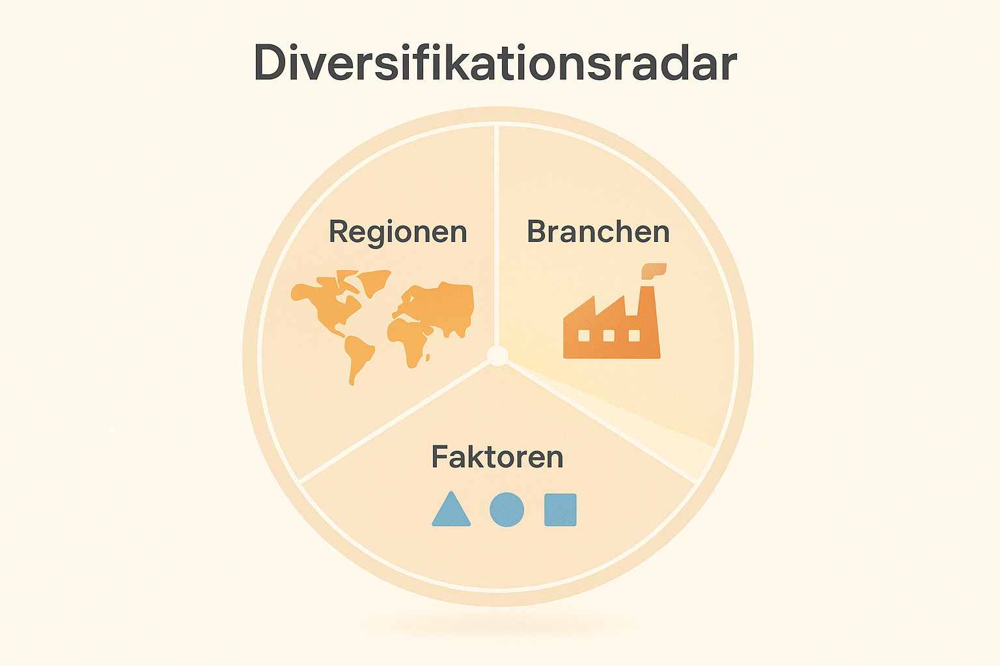

5 Diversifikation: Das Geheimnis der Profis –einfach erklärt
5.1 Warum Profis nie auf ein Pferd setzen
In jedem Sport, in jedem Spiel, sogar im Alltag geben Profis nie alles auf eine einzige Karte.
Fußballtrainer wissen: Eine Mannschaft gewinnt nicht, wenn sie nur aus Stürmern besteht.
Ein Musiker verlässt sich nicht auf ein einziges Lied.
Und eine Köchin zaubert selten mit nur einer Zutat ein Festmenü.
Beim Investieren ist es genauso.
Viele Einsteiger/-innen begehen denselben Fehler: Sie denken – „Wenn ich nur die richtige Aktie finde, mache ich den großen Gewinn!“
Aber die Wahrheit lautet: Der Weg zum Vermögensaufbau führt nicht über den einen Treffer, sondern über viele kluge kleine Entscheidungen.

Ein altes Sprichwort fasst es perfekt zusammen:
„Lege nie alle Eier in denselben Korb.“
Wenn du stolperst und der Korb fällt, gehen vielleicht ein paar Eier kaputt – aber nicht alle.
In der Sprache des Investierens nennt man das Diversifikation.
5.2 Was Diversifikation wirklich bedeutet
Diversifikation heißt „Verteilung“.
Du streust dein Geld auf mehrere Anlagen, damit du nicht von einer einzigen abhängig bist.
Dadurch sinkt das Risiko, dass ein unerwartetes Ereignis dein gesamtes Vermögen trifft.
Das Prinzip ist universell:
👉 Schüler, die mehrere Lieblingsfächer haben, kommen besser klar, wenn sie in einem mal eine schlechte Note schreiben.
👉 Sportler, die mehrere Techniken können, verkraften einen Fehler leichter.
👉 Musiker mit mehreren Songs verlieren nicht ihr Publikum, wenn eines floppt. Genauso bei Finanzen:
Wenn du verschiedene Anlageformen besitzt, gleichen sie sich gegenseitig aus.
Ein Teil steigt, ein anderer fällt – aber das Gesamtbild bleibt stabiler.
Auch Profis nennen Diversifikation „die einzige kostenlose Sicherheit der Finanzwelt“.
Denn du verzichtest auf keinen Gewinn – du reduzierst nur extreme Ausreißer.
5.3 Warum Diversifikation wirkt – eine kleine Geschichte
Lukas, 21, studiert Wirtschaft und beschließt, zu investieren.
Er liest über eine angesagte Tech‑Aktie, denkt: „Die wächst schnell – da steige ich ein!“
Ein Jahr später kommt eine Krise, die Firma verliert 40 % – und Lukas sieht rot.
Frustriert fragt er online in einem Forum: „Was hätte ich tun sollen?“
Antwort eines erfahrenen Investors:
„Du hättest mehrere Unternehmen wählen sollen. Oder gleich einen ETF – da hast du Hunderte Aktien in einem Paket.“
Lukas lernt: Nicht jede Firma läuft gut, aber Märkte als Ganzes wachsen, weil Wirtschaft und Innovation nicht von einer Idee abhängen.
Diversifikation schützt ihn nicht vor jeder Welle, aber sie verhindert, dass ein einzelner Sturm sein Schiff kentert.
5.4 Wie du dein Geld streuen kannst
a) Nach Regionen
Die Welt ist groß – und keine Region ist immer am erfolgreichsten.
Manchmal führen die USA, manchmal Europa, manchmal Schwellenländer.
Wenn du in verschiedene Regionen investierst, profitierst du von mehreren Wachstumsquellen.
Beispiel:
👉 30 % Welt‑ETF auf Industrieländer
👉 20 % Emerging Markets ETF
👉 10 % Europa‑Schwerpunkt
👉 Rest eventuell Anleihen oder Tagesgeld Damit baust du dir ein kleines „Welt‑Portfolio“.
b) Nach Branchen
Technologie boomt, Energie schwankt, Gesundheit wächst stetig.
Wer sein Geld nur in Tech steckt, erlebt Glanzjahre – aber auch Rückschläge.
Wenn du zusätzlich Konsum, Industrie, Medizin und Nachhaltigkeit im Mix hast, entsteht Balance.
c) Nach Anlageklassen
Neben Aktien gibt es Anleihen, Rohstoffe, Immobilienfonds.
Sie verhalten sich unterschiedlich, wenn Märkte sich ändern.
Beispiel: Wenn Aktien fallen, steigen oft Anleihen.
Das gleicht Schwankungen aus – wie bei einem Musikmix aus ruhigen und schnellen Songs.
5.5 Die Team‑Metapher: Warum Diversifikation wie Mannschaftssport ist

Denk an ein Fußballteam:
Wenn alle nur stürmen, gibt’s keine Verteidigung.
Wenn alle nur abwehren, fällt kein Tor.
Ein gutes Team mischt beides – schnelle Läufer/-innen, strategische Denker/-innen, starke Verteidiger/-innen.
Das Gleiche tust du im Depot:
- Aktien sind die Angreifer – sie bringen Chancen auf hohe Trefferzahlen (Rendite).
- Anleihen oder Tagesgeld sind Verteidiger – sie machen das Spiel stabil.
- Rohstoffe oder Immobilien spielen im Mittelfeld – sie liefern Ausgleich.
Ohne Team‑Balance riskierst du entweder Stillstand oder Chaos.
Doch in Kombination entsteht ein starkes Zusammenspiel: Deine Finanzen spielen als Mannschaft - nicht als Einzelkämpfer.
5.6 Wie viel ist „genug“ Diversifikation?
Manche glauben: „Ich kaufe zehn Aktien – reicht das?“
Vielleicht, aber Diversifikation heißt nicht „so viele wie möglich“, sondern „so gut wie nötig“.
Wenn du über ETF‑Sparpläne investierst, besitzt du mit einem einzigen Welt‑ETF bereits Anteile an tausend Unternehmen – von Apple bis Nestlé.
Mehr geht kaum.
Darum sind ETFs so beliebt: Man kauft automatisch Diversifikation, ohne hundert Entscheidungen treffen zu müssen.
Doch auch innerhalb eines ETFs lohnt sich Streuung:
Ein Welt‑ETF (z. B. auf den MSCI World) ergänzt durch einen kleinen Anteil an Schwellenländern oder nachhaltigen Investments erweitert dein Spektrum.
Faustregel:
👉 Lieber breit und unspektakulär als spitz und spannend.
👉 Langweilige Portfolios sind oft erfolgreiche Portfolios.5.7 Wie Diversifikation dein Risiko senkt
Erinnern wir uns an Kapitel 3: Risiko = Schwankung.
Wenn du nur eine Aktie hältst, schwankt dein Vermögen mit jeder Nachricht aus genau diesem Unternehmen.
Wenn du viele Aktien hältst, gleichen sich Einzelbewegungen aus.
Ein Bild hilft:
Stell dir zehn Boote auf einem See vor.
Wenn Wind kommt, wackeln alle – aber nicht gleichzeitig, nicht gleich stark.
In Summe bleibt das Floß ruhig.
So wirkt Diversifikation: Sie macht den Sturm spürbar, aber nicht gefährlich.
Fachlich ausgedrückt:
Deine Einzelrisiken heben sich teilweise gegenseitig auf.
Der Fachbegriff dafür lautet „unsystematisches Risiko eliminieren“.
Aber für dich heißt es: Du schläfst ruhiger.
Diversifikation heißt nicht, alles zu haben
Vorsicht: Zu viel Streuung kann verwirren.
Wenn du 50 Fonds besitzt, weißt du irgendwann selbst nicht mehr, was du wolltest.
Man nennt das „Verwaltungs‑Overkill“.
Darum ist Zielgerichtetheit wichtig: Wähle breit – aber klar.
Beispiel eines Einsteiger‑Portfolios:
👉 70 % Welt‑ETF
👉 20 % Schwellenländer‑ETF
👉 10 % Anleihen‑ETF Fertig.
Mehr braucht es am Anfang nicht, um global diversifiziert zu sein.
Diversifikation im Alltag – So merkst du, dass du es schon lebst
Du nutzt sicher schon Diversifikation, ohne es zu wissen:
👉 Du hörst nicht nur eine Band.
👉 Du hast mehrere Freundeskreise.
👉 Du verfolgst Serien, Filme, Bücher – nicht nur ein Genre. Warum?
Weil du weißt: Abwechslung schützt vor Langeweile und Enttäuschung.
Dasselbe Prinzip wirkt bei Geld.
Du kombinierst unterschiedliche Quellen, um stabil zu bleiben, wenn eine mal enttäuscht.
5.8 Das Diversifikationsradar - dein Finanz‑Kompass

Ein Radar hilft Pilot/-innen, die Orientierung zu behalten.
In deinen Finanzen tut das Diversifikationsradar dasselbe:
Er zeigt, ob du zu stark auf eine Richtung fokussierst.
Ein einfaches Beispiel:
| Bereich | Anteil | Kommentar |
|---|---|---|
| Nordamerika | 45 % | dominierend, aber wachstumsstark |
| Europa | 25 % | Stabilität |
| Asien | 20 % | Wachstum |
| Schwellenländer | 10 % | Dynamisch, riskanter |
Wenn du siehst, dass du 90 % in US‑Tech investiert hast, weißt du sofort: zu einseitig.
Dein Ziel: Gleichmäßige Segmente, die sich gegenseitig ergänzen.
Diversifikation und Zukunftsthemen
Viele junge Leute fragen: „Und was ist mit Themenfonds – zum Beispiel Klimaschutz, KI oder Gaming?“
Antwort: Kein Problem – wenn du sie beimischst.
Denke an Gewürze: Sie machen ein Gericht interessanter, ersetzen aber nicht die Hauptzutaten.
Ein Beispiel:
90 % Basis‑ETF, 10 % Themenfonds.
Damit bleibst du breit aufgestellt und kannst zugleich persönliche Interessen einbringen.
Was passiert, wenn du nicht diversifizierst?
Ein anschauliches Beispiel:
Susi, 25, investiert nur in Start‑ups aus der Solarbranche.
Fünf Jahre lang läuft alles super – dann kommt eine Regulierung, und die Kurse halbieren sich.
Hätte sie neben Solar auch Technologie, Konsum und Gesundheit gehalten, wäre der Verlust kleiner.
Diversifikation verhindert nicht den Regen, aber sie verteilt die Tropfen auf mehr Flächen.
Zeit + Diversifikation = Superkraft
Zeit allein glättet Schwankungen (Kapitel 3), Diversifikation reduziert sie gleichzeitig.
Gemeinsam ergeben sie Stabilität – der „Stoßdämpfer“ des Geldlebens.
Je früher du startest und je breiter du streust, desto weniger können dich Krisen aus der Bahn werfen.
In der Wissenschaft nennt man das „Portfoliotheorie“; in der Praxis heißt es einfach: clever sein, nicht zocken.
5.9 Der psychologische Bonus
Diversifikation wirkt auch mental:
Wenn du weißt, dass dein Kapital breit verteilt ist, sinkt die Panik in turbulenten Zeiten.
Du hast Kontrolle – und Kontrolle schafft Gelassenheit.
Viele Anleger/-innen berichten, dass sie durch Diversifikation entspannter schlafen – selbst bei Marktschwankungen.
Das ist ein unterschätzter Wert: emotionale Stabilität.
5.10 Nachhaltige Diversifikation
Ein moderner Aspekt: Du kannst heute breit streuen und trotzdem verantwortungsvoll investieren.
ESG‑ETFs oder nachhaltige Fonds berücksichtigen Umweltschutz, Soziales und gute Unternehmensführung.
Das Schöne: Du kombinierst finanzielle und ethische Diversifikation – also Gewinn plus Werte.
Wie du dein Portfolio pragmatisch aufbaust
Schritt 1: Starte mit einem Welt‑ETF – er ist deine Basis.
Schritt 2: Ergänze kleine Beimischungen (z. B. Schwellenländer oder Nachhaltigkeit).
Schritt 3: Entscheide dich, wie sicher du dich fühlst – Anleihenanteil anpassen.
Schritt 4: Regelmäßig prüfen, ob die Gewichte noch passen.
👉 Tipp: Einmal im Jahr checken reicht – sonst verheddert man sich. Diversifikation – oft unsichtbar, aber wirkungsvoll
Wenn du diversifizierst, merkst du den Nutzen nicht täglich.
Aber er zeigt sich, wenn Krisen kommen.
Wer 2020 breit gestreut war, erlebte Rückschläge – aber auch Erholungen.
Wer in nur einem Sektor investiert war, blieb lange unten.
Der Effekt offenbart sich im Rückblick: Diversifikation ist der unsichtbare Sicherheitsgurt.
Typische Fehler und wie du sie vermeidest
1️⃣ Zu wenig Streuung – alles in einem Land oder Sektor.
→ Lösung: Weltweite ETFs, Anleihen‑Anteil.
2️⃣ Zu viel Streuung – unnötig viele Produkte.
→ Lösung: max. 4 bis 6 ETFs reichen.
3️⃣ Thematische Überlastung – nur Trendthemen (Gaming, KI etc.).
→ Lösung: kleinen Anteil (unter 10 %) beimischen.
4️⃣ Kein Rebalancing: wenn eine Position zu groß wird.
→ Lösung: Einmal pro Jahr ausgleichen.
5.11 Mini‑Leitfaden - Dein persönlicher Diversifikationsplan
📍 Was besitze ich schon? (Konto, Depot, Sparplan)
🌍 Welche Regionen sind abgedeckt? (Europa, USA, Asien …)
🏢 Welche Branchen habe ich? (Tec, Gesundheit, Industrie)
📈 Wieviel in Aktien, wieviel in Anleihen etc.?
🎯 Passt das zu meinem Ziel und meinen Nerven?
Wenn du diese Fragen ehrlich beantwortest, bist du schon weiter als 90 % der Anleger/-innen.
5.12 Was du aus diesem Kapitel mitnehmen solltest
👉 Diversifikation = Risikostreuung – das Gegenteil von Zockerei.
👉 Sie ist einfach umsetzbar – vor allem mit ETFs.
👉 Balance schlägt Mut zum Einzelwettkampf.
👉 Diversifikation bringt Ruhe und stabile Rendite.
👉 Es ist nicht die „spannendste“ Strategie, aber eine erfolgreiche. 5.13 Zum Nachdenken
„Sicherheit kommt nicht von der Abwesenheit von Risiko,
sondern von der Verteilung davon.“
Mit Diversifikation baust du dir keinen Panzer,
aber ein stabiles Boot.
Du kannst durch die Wellen segeln – manchmal heftig, aber du gehst nicht unter.
5.14 Ausblick
Im nächsten Kapitel lernst du ETFs kennen – das leichteste Werkzeug, um Diversifikation automatisch umzusetzen.
Du wirst sehen, warum sie so beliebt sind und weshalb sie für Einsteiger/-innen der einfachste Weg zum Investieren sind.